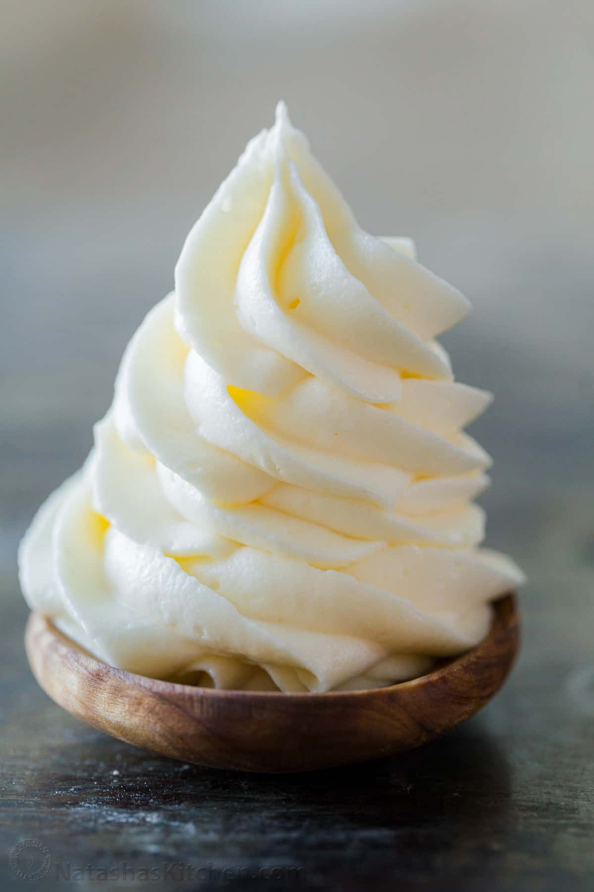

Cream Cheese Frosting

Who doesn't love cream cheese frosting?
Cream cheese frosting will add that extra pizzaz to a cake without sending your guests to the hospital with insta-diabetes.
Easy to make, easy to eat!
Ingredients
- 32oz Cream Cheese
- 16 tablespoons unsalted butter
- 2 teaspoons vanilla extract
- 4 cups powdered Sugar
Steps
- In a large bowl, cream together cream cheese and butter
- mix in vanilla extract
- gradually mix in Powdered Sugar
- let frosting set in the fridge for a few hours to firm up
- use and store in fridge